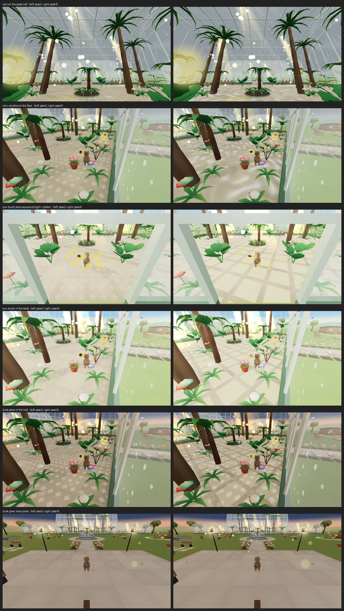

Left pass 5, right pass 6 (page: tools/verify/verify-greenhouse.html shots p6_*; the rain page uses a grey sky for both sides). Rows: rain on the glass roof (more streaks, faster); rain in the hall (the floor's light becomes wobbly caustics); a sun burst (crisp window-pane squares of warm light on the floor, pollen floating; the plants perk up, not visible in a still); the dusk glow (lamp pools stronger, squares of low light, fireflies round her); also a rare wind sways every plant with a whoosh, a morning haze draws the garden in for the first minute and a half, the rain patter drums in gusts with thunder far away. Legibility: the sleepy cat in the bed and the ladybird toned down (they glowed like fireballs), fireflies larger.
